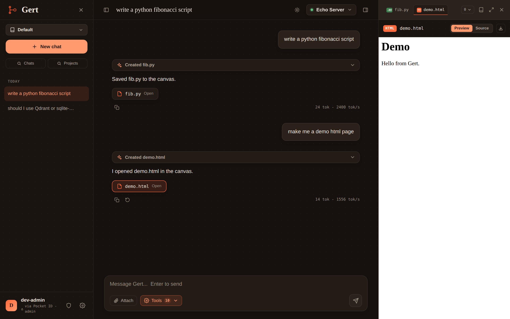

Chat, RAG & Tools
Gert speaks the OpenAI-compatible chat protocol with function calling and streaming, so any vLLM-served model with tool support drives the full loop.
The five tools
| Tool | What it does |
|---|---|
search_documents | Hybrid search over this project's private documents and memory. |
web_search | Search the web via SearXNG; optionally fetch + summarize results (SSRF-guarded). |
run_python | Execute Python in an ephemeral gVisor sandbox; only stdout returns. |
set_todos | Replace the model-managed todo checklist the chat window renders live. |
get_datetime | Current date/time (UTC + optional IANA timezone). |
Only tools that are (a) granted by the user's gert_tools
JWT entitlement, (b) enabled on the conversation, and
(c) requested in the message are offered to the model. The entitlement
is the hard ceiling - enforced when tools are advertised and re-checked at
execution time.


Hybrid retrieval
search_documents runs two queries against the project's
rag.db and fuses them:
- Vector KNN against
vec_chunks- the query is embedded by the same model that embedded the chunks. - Lexical BM25 against
fts_chunks. - Reciprocal Rank Fusion merges the two ranked lists into the final top-k, joined back to chunks and documents for content, page, and filename.
The result feeds the tool card and seeds the inline citations
([1] -> file.pdf - p.4).
Memory rides the same query. A project's memory entries are embedded into the same
rag.db, distinguished only bykind = 'memory'- so retrieval covers documents and memory together with no extra plumbing. Pinned memory is additionally prepended to the system prompt.
Artifacts (canvas tabs)
The model opts a fenced code block into the canvas by naming it in the fence info string:
```html name=demo.html
<h1>Demo</h1>
```Named fences with a known language (md, html,
svg, py, cs, cpp, js,
rs) persist as artifact rows and open as canvas tabs live - with HTML
preview, source view, and download. Unnamed fences stay inline in the message. A reload
gets the same artifacts back through the thread GET.


Detached turns
A turn is detached from the request that started it. POST .../messages
only plans - validate, persist the user message and a streaming placeholder,
snapshot identity and entitlements - then enqueues and responds
202 Accepted. A background worker runs the tool loop:
- Every event gets a per-conversation monotonic
seqand is persisted before it is published - the database is the source of truth, transports are just delivery. - Clients attach over SSE or range polling and switch freely - the seq watermark makes it gap- and duplicate-free.
- Generation survives disconnects: a reload mid-turn resubscribes from the streaming row's
seqand loses nothing. POST .../cancelstops the in-flight turn server-side; the partial answer persists ascancelled.
Document ingestion
Upload returns 202 immediately; a background worker does the rest:
1. extract # PDF -> PdfPig, DOCX -> OpenXML - in an isolated subprocess
2. chunk # token-aware windows with overlap; page/section tracked
3. embed # batched against the vLLM embeddings endpoint
4. write # chunks + vec_chunks + fts_chunks; progress emitted
5. status # processing -> ready | failedHardened extraction. Uploads are untrusted bytes fed to large parsers, so extraction runs out-of-process in an unprivileged, resource-capped helper: dropped privileges, no network, read-only access to the one input file,
RLIMIT_AS/CPU/NPROC+ wall-clock timeout, DTD/external entities off (XXE), and decompressed-size caps (zip bombs). A crash fails that document, never the host.
The sandbox
Each run_python call executes in an ephemeral gVisor
(runsc) container:
- No inbound network; outbound disabled by default - the exfiltration brake for arbitrary code.
- Read-only rootfs, small writable
/tmp, and no mount of/data- the sandbox never sees any user's database files. - CPU, memory, and PID limits with a hard wall-clock timeout; the container is destroyed after the call.